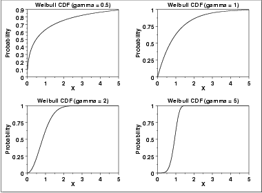
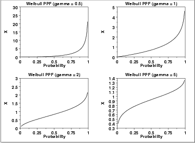
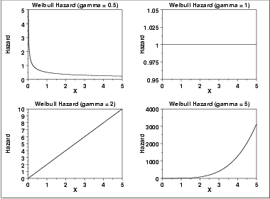
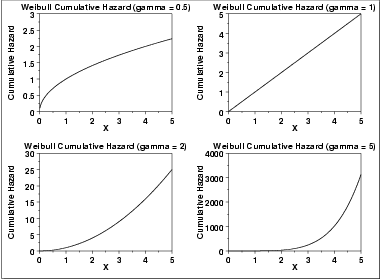
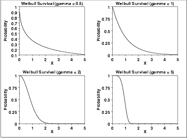
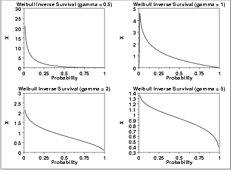

1.3. EDA Techniques
1.3.6. Probability Distributions
1.3.6.6. Gallery of Distributions
1.3.6.6.8. |
Weibull Distribution |
\( f(x) = \frac{\gamma} {\alpha} (\frac{x-\mu} {\alpha})^{(\gamma - 1)}\exp{(-((x-\mu)/\alpha)^{\gamma})} \hspace{.3in} x \ge \mu; \gamma, \alpha > 0 \)
where γ is the shape parameter, μ is the location parameter and α is the scale parameter. The case where μ = 0 and α = 1 is called the standard Weibull distribution. The case where μ = 0 is called the 2-parameter Weibull distribution. The equation for the standard Weibull distribution reduces to
\( f(x) = \gamma x^{(\gamma - 1)}\exp(-(x^{\gamma})) \hspace{.3in} x \ge 0; \gamma > 0 \)
Since the general form of probability functions can be expressed in terms of the standard distribution, all subsequent formulas in this section are given for the standard form of the function.
The following is the plot of the Weibull probability density function.

\( F(x) = 1 - e^{-(x^{\gamma})} \hspace{.3in} x \ge 0; \gamma > 0 \)
The following is the plot of the Weibull cumulative distribution function with the same values of γ as the pdf plots above.

\( G(p) = (-\ln(1 - p))^{1/\gamma} \hspace{.3in} 0 \le p < 1; \gamma > 0 \)
The following is the plot of the Weibull percent point function with the same values of γ as the pdf plots above.

\( h(x) = \gamma x^{(\gamma - 1)} \hspace{.3in} x \ge 0; \gamma > 0 \)
The following is the plot of the Weibull hazard function with the same values of γ as the pdf plots above.

\( H(x) = x^{\gamma} \hspace{.3in} x \ge 0; \gamma > 0 \)
The following is the plot of the Weibull cumulative hazard function with the same values of γ as the pdf plots above.

\( S(x) = \exp{-(x^{\gamma})} \hspace{.3in} x \ge 0; \gamma > 0 \)
The following is the plot of the Weibull survival function with the same values of γ as the pdf plots above.

\( Z(p) = (-\ln(p))^{1/\gamma} \hspace{.3in} 0 \le p < 1; \gamma > 0 \)
The following is the plot of the Weibull inverse survival function with the same values of γ as the pdf plots above.

| Mean |
\( \Gamma(\frac{\gamma + 1} {\gamma}) \)
where Γ is the gamma function \( \Gamma(a) = \int_{0}^{\infty} {t^{a-1}e^{-t}dt} \) |
| Median | \( \ln(2)^{1/\gamma} \) |
| Mode |
\( (1 - \frac{1} {\gamma})^{1/\gamma} \hspace{.2in} \gamma > 1 \)
\( 0 \hspace{1.05in} \gamma \le 1 \) |
| Range | 0 to \(\infty\). |
| Standard Deviation | \( \sqrt{\Gamma(\frac{\gamma + 2} {\gamma}) - (\Gamma(\frac{\gamma + 1} {\gamma}))^{2}} \) |
| Coefficient of Variation | \( \sqrt{\frac{\Gamma(\frac{\gamma + 2} {\gamma})} {(\Gamma(\frac{\gamma + 1} {\gamma}))^{2}} - 1} \) |